Маршрут ретрита проходит через четыре места, каждое из которых веками считалось особенным — от старообрядческого села до вершины, к которой раньше поднимались только избранные.
Свой маршрут мы начинаем из посёлка Тюлюк — исторического поселения старообрядцев, которые прятались в горах в период гонений. Многие дома здесь ещё сохранились с начала XIX века.
Так что, идя по старинному посёлку, можно тоже не терять время даром, а попутно любоваться старинными мельницами, теремами и другими дошедшими до наших дней постройками местных жителей.
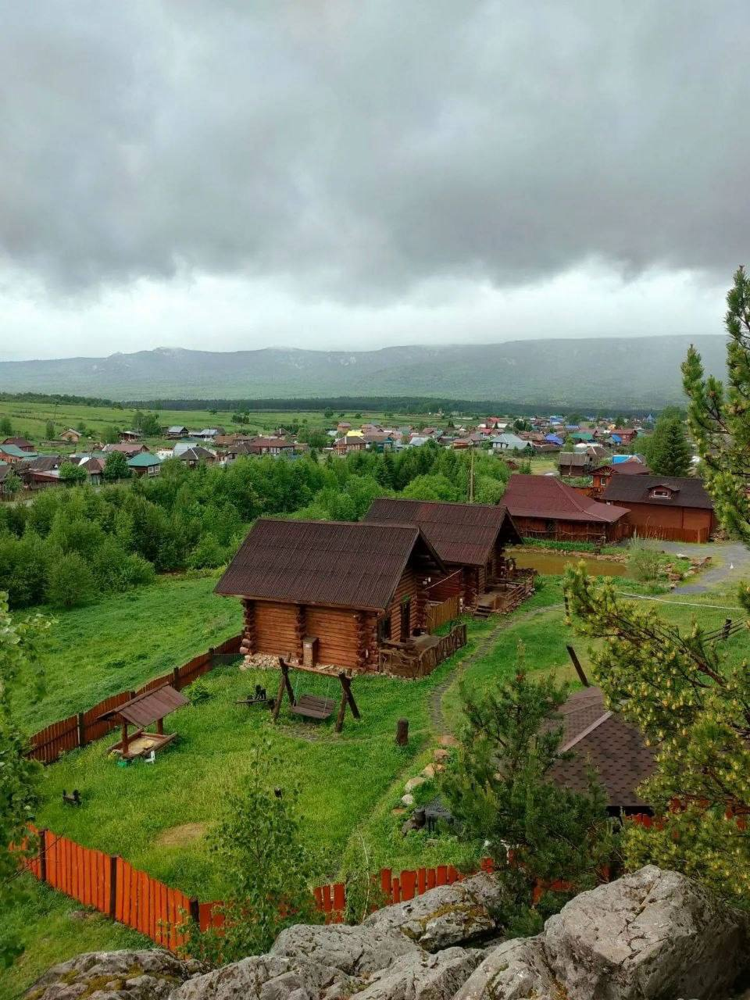
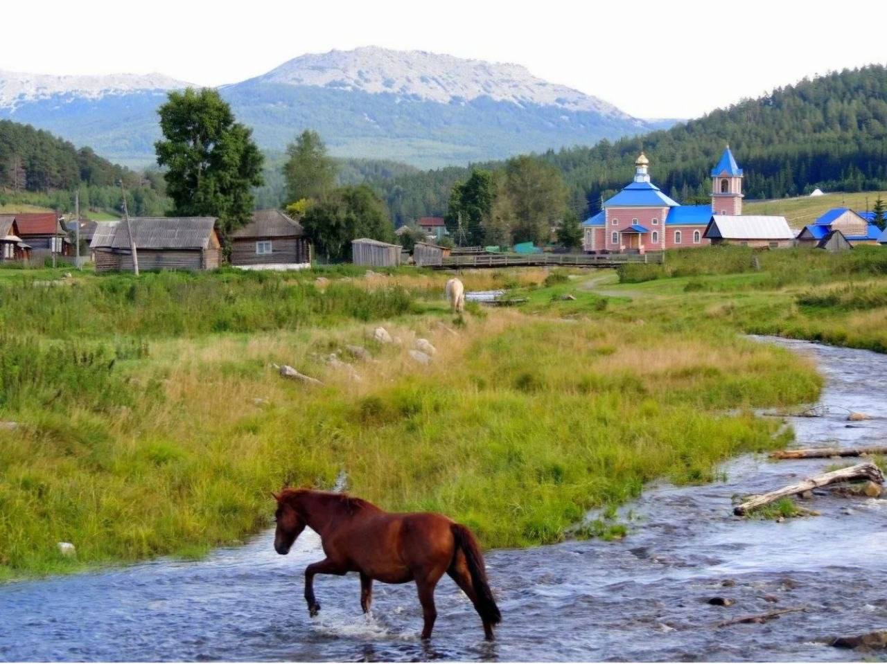
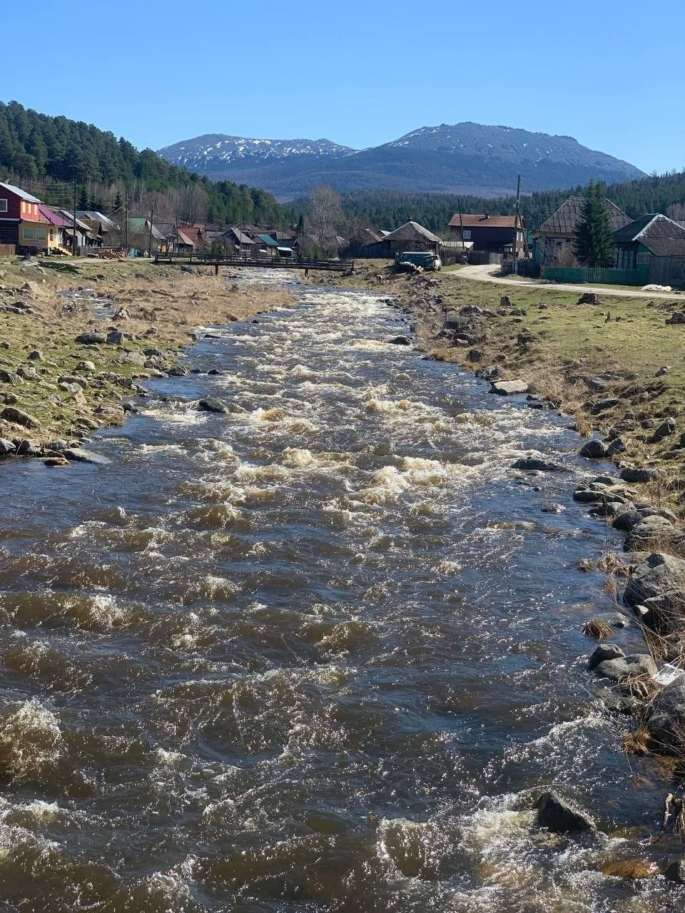
Иремель — вторая по высоте вершина Южного Урала. Расположена на северо-востоке Белорецкого района Башкортостана, северо-западные склоны находятся в границах Катав-Ивановского района Челябинской области.
Гора представляет собой двухвершинный массив: Большой Иремель — высота 1582,3 м, имеет платообразную вершину Кабан (в переводе с башкирского — «стог»).
На протяжении многих веков вершина Иремеля была местом запретным. Подниматься туда могли лишь избранные — те, кто уполномочен вести диалог с богами. На Иремель ходили прежде всего старейшины, чтобы «договориться» о ниспослании тёплой погоды, хорошего урожая и полноводности рек.
Вполне возможно, что со временем склоны горы стали местом упокоения наиболее отличившихся представителей башкирских родов, достойных обрести последний покой поближе к богам. Более того, традиция эта пережила языческие верования и продолжилась даже после того, как башкиры приняли ислам от Волжской Булгарии.
Многие верят, что Иремель помогает исполнять сокровенные мечты. Загадывать желание советуют на вершине — считается, что там связь с высшими силами сильнее. При этом есть важный нюанс: гора, по поверьям, помогает только тем, чьи помыслы чисты.
Здесь связь тоньше. В башкирской традиции восхождение на Иремель воспринимали как обряд инициации. Есть даже пословица: «Не оседлавший коня не станет джигитом, не взошедший на Иремель не станет настоящим мужчиной». То есть идея в том, что подъём — это своего рода испытание, которое помогает мужчине раскрыть внутреннюю силу, обрести зрелость и «принять свою мужскую часть».
Корни в сакральном восприятии горы. Издавна её считали местом силы, где можно приблизиться к истине. В древности подниматься на вершину разрешалось лишь избранным — старейшинам, шаманам, батырам: они «говорили» с духами, просили о хорошем урожае, погоде или исцелении. Отсюда и одна из версий происхождения названия: «ир» (мужчина, герой) + «эмел» (седло) — силуэт массива издалека действительно напоминает седло.
Иногда добавляют, что гора благотворно влияет на энергетику человека: после восхождения люди отмечают прилив сил, пробуждение творческих или духовных ресурсов. А в современных эзотерических кругах Иремель часто называют «местом силы».
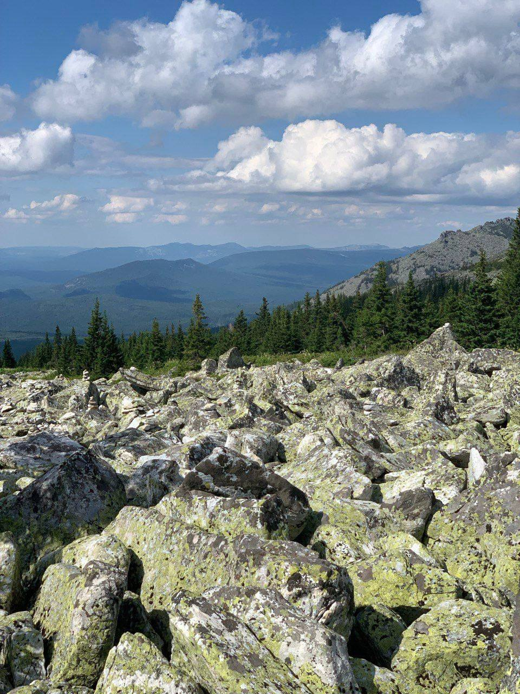
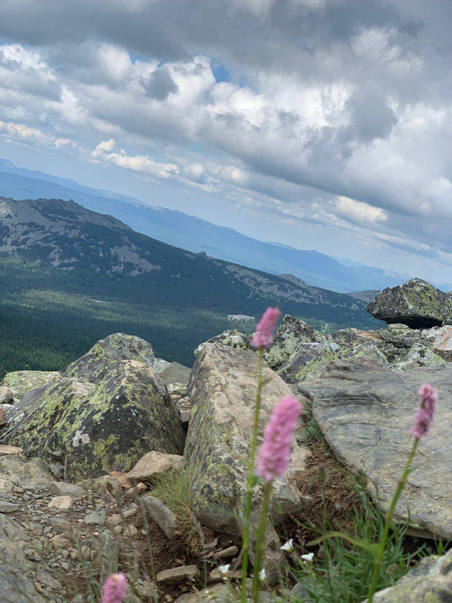
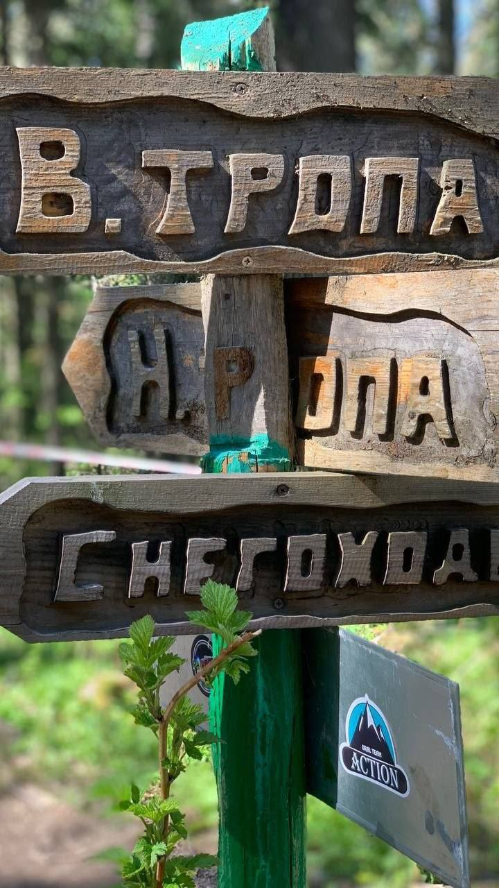
Это длинный горный хребет, который тянется с северо-востока на юго-запад. Он расположен на территории Катав-Ивановского района Челябинской области и Белорецкого района Республики Башкортостан.
Высшая точка — гора Большой Шелом (около 1427 м). Другие заметные вершины: гора Поперечная (1389 м, вторая по высоте в хребте).
На склонах — тайга, выше (примерно от 750 м) — субальпийские луга и криволесье, а на вершинах начинаются каменистые россыпи (курумы) и участки горной тундры. Хребет сложен кварцитами и кварцито-песчаниками.
Здесь встречается много редких, эндемичных и реликтовых растений, в том числе занесённых в Красную книгу. Пять видов растений Челябинской области известны только на Зигальге.
В 2019 году здесь создали национальный парк «Зигальга» для охраны горных ландшафтов, флоры и фауны.
Встречаются довольно колоритные рассказы. Вот какие мотивы там всплывают:
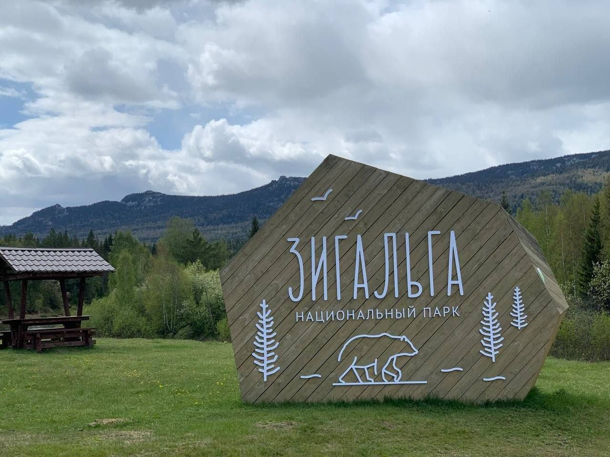
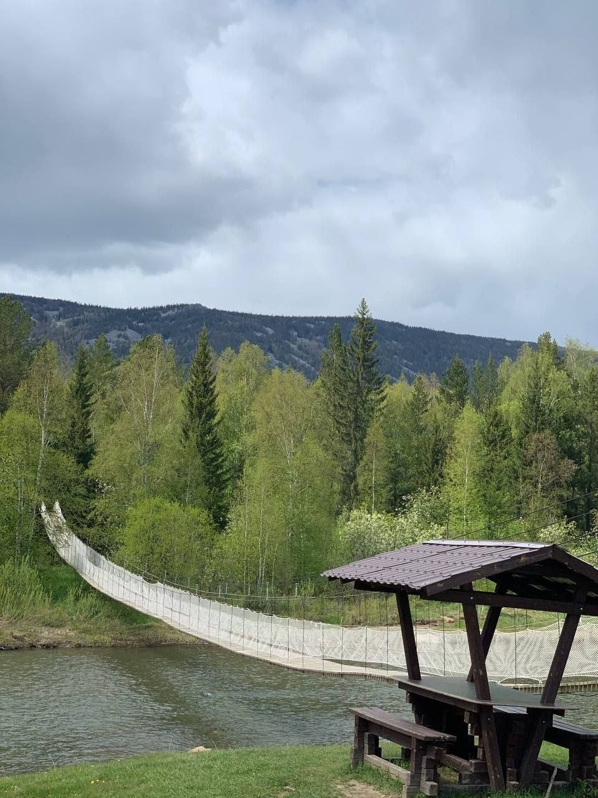
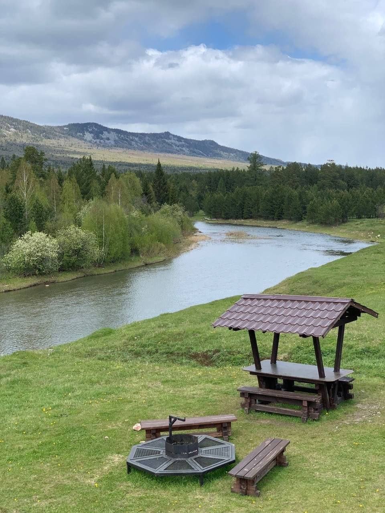
Ларкино ущелье — живописное место совсем недалеко от села Тюлюк, у подножия гор Малый и Большой Иремель. Мы собрали главное, что стоит знать перед поездкой.
Ущелье образовалось, когда река Тюлюк, пробиваясь сквозь скальные породы, сузилась и сделала резкий разворот. В этом месте поток воды за тысячи лет вымыл в скале небольшую теснину, а по берегам раскинулась густая тайга. Вокруг — атмосфера настоящего сказочного леса: вековые деревья, мшистые камни, шум горной реки. Летом глубина обычно чуть выше колена, но вода очень холодная — горная речка всё-таки. Дальше следуйте по тропинке вдоль берега.
У ущелья есть второе, более старое название — Ларкина мельница. Оно появилось потому, что до революции здесь стояла водяная мельница крестьянина по фамилии Ларкин. После революции мельницу демонтировали. Кстати, неподалёку есть гора Мельничная — название тоже напрямую связано с историей использования реки.
Мистическое место у подножия двух великанов: Малый Иремель и Большой Иремель
В общем, если окажетесь в Тюлюке, советуем выделить время на эту прогулку: это отличный способ познакомиться с окрестностями и отдохнуть от более длинных маршрутов. Удачной поездки!
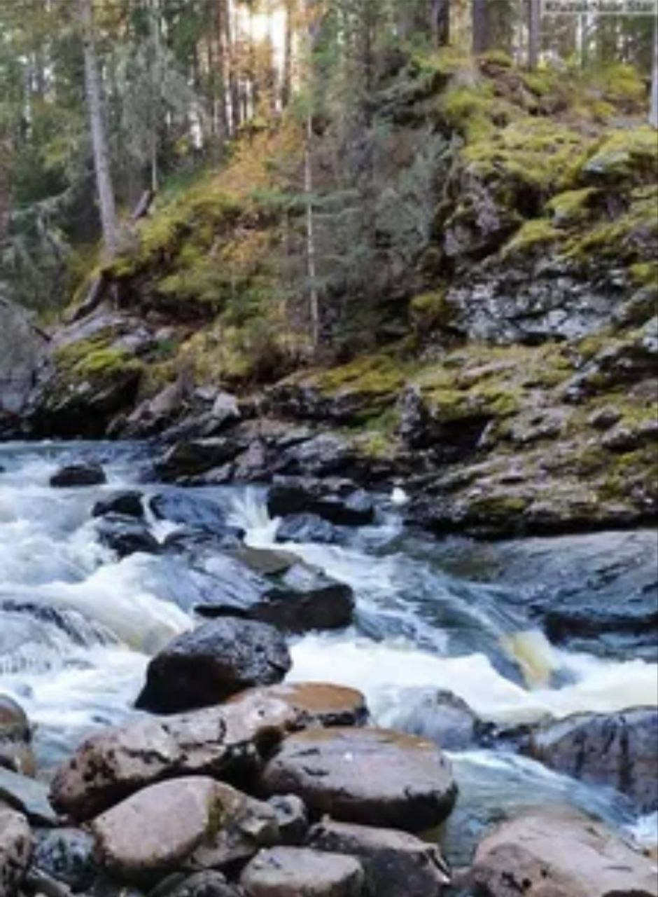
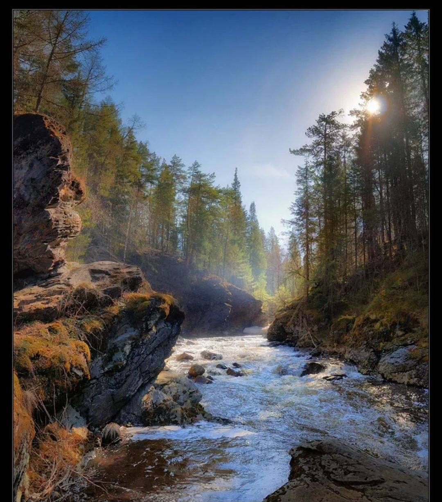
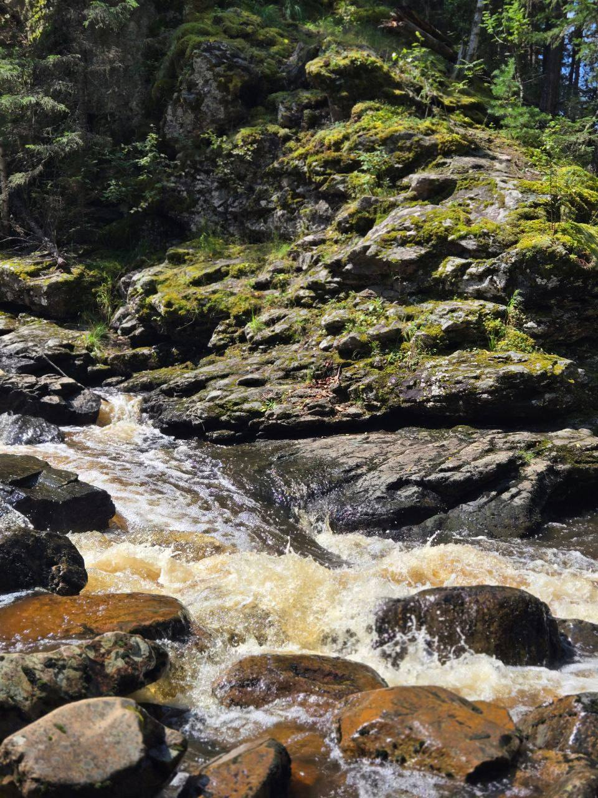
Тюлюк, Иремель, Зигальга и Ларкино ущелье — часть маршрута огненного ретрита. Напишите нам, чтобы узнать даты и забронировать место.